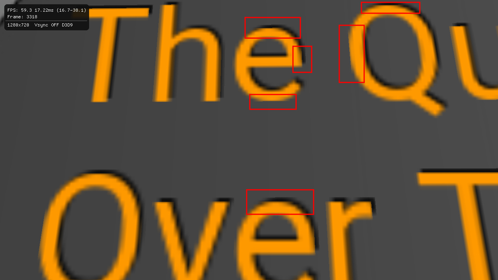
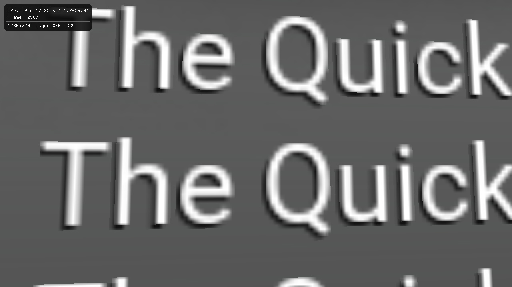

Pencheff
This is what I notice so far, experiment is done with both Text3D and RichText3D components, both work similar when rendering text.


The second screenshot shows the problem a bit more - the glyphs are cut off on the edges, very noticeable on the small letter “e”.